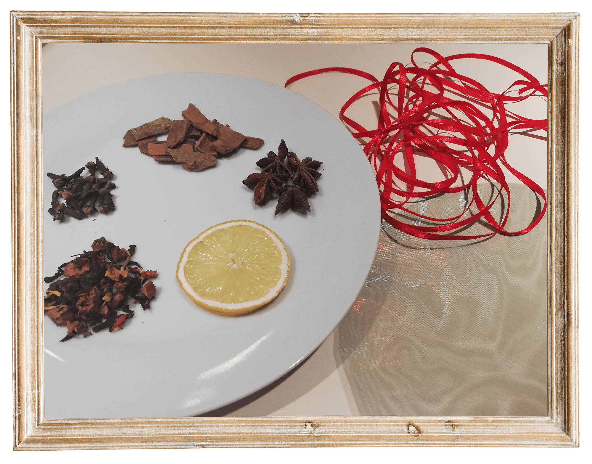
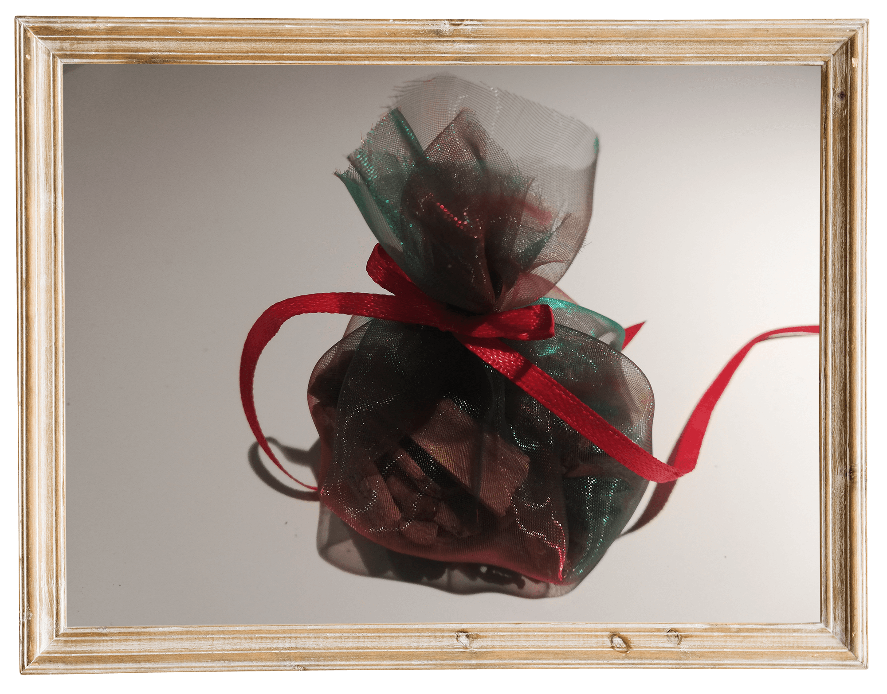

Szabó T. Anna:
Mézeskalács
Ünnepi csendben
fényes a mécses,
készül a mézes,
illata édes,
tojás, liszt,cukor, zsír,
fűszer kell bele sok,
összerakom gyorsan,
ha ügyes vagyok!
Liszthó szitálgat,
szállnak a pelyhek,
mintha leszállna
a földre a felleg,
selymes és puha és
belepi a kezem,
de ha beletüszkölök
(prüssz) jaj nekem!
Készíts illatszütyőt!
Amire szükséged lesz:
organza, olló, szalag, fűszerek
Használj olyan fűszereket, amelyek az ünnepet juttatják az eszedbe:
például csillagánizs, fahéj, szárított gyümölcsök, teafű, szegfűszeg
1. Vágj ki az anyagból egy kb 20 cm átmérőjű kört.
2. Töltsd meg, majd kösd össze szalaggal.
3. Ha szálalódik az anyag,
óvatosan (csakis szülői felügyelet mellett) égesd meg a széleket.